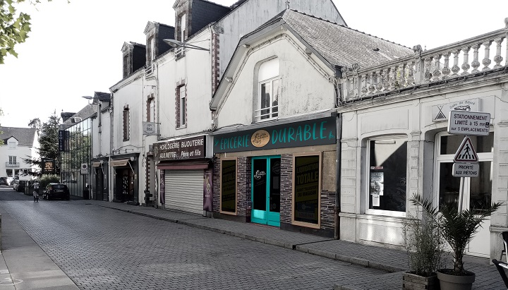

6 Place Ernest Bréant à Châteaubriant
On vous donne rendez-vous à partir du Vendredi 12 décembre 2020, ouverture à 10:00 ! - Magali et Blandine
Nous vous accueillons aux horaires suivants :
| Lundi | Fermé |
| Mardi | 10:00 - 14:00 / 16:00 - 19:00 |
| Mercredi | 9:00 - 18:00 |
| Jeudi | 10:00 - 14:00 / 16:00 - 19:00 |
| Vendrdi | 10:00 - 14:00 / 16:00 - 19:00 |
| Samedi | 9:00 - 18:00 |
| Dimanche | 9:00 - 13:00 / 15:00 - 18:00 |
L'épicerie "Les p'tits ruisseaux" est conçue dans une optique de réduction des déchets: tout est accessible en vrac ! L'idéal est de venir avec ses propres contenants (bocaux, sacs en tissus, boites réutilisables, etc). Vous n'avez pas l'habitude mais vous aimeriez quand même profiter des produits locaux et bios ? Venez nous voir, on en discute et on vous explique la démarche !
Nous proposons ainsi une sélection de produits d’épicerie sèche en majorité issus de l’agriculture biologique (pâtes, farine, sucre, céréales, fruits secs…), mais aussi des produits transformés issus de producteurs locaux, ainsi que des produits cosmétiques et ménagers.
Nous prévoyons une offre de commande en ligne avec point de retraits, précisions à venir en janvier !
Pour être notifié de la disponbilité de l'offre ou pour suivre nos actualités, vous pouvez nous suivre sur la Page Facebook Les p'tits ruisseaux - épicerie durable Châteaubriant ou sur Le site internet https://lesptitsruisseaux-chateaubriant.fr/
A très vite en boutique !
Blandine et Magali